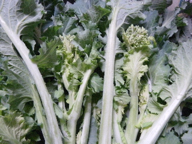
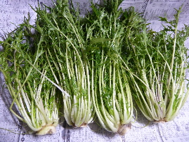

あすっこを収穫しました。
2014/02/16
「あすっこ」が1本巨大になったので、沢山収穫できました。

今年はあすっこの大きさがバラバラなので、いっせいに食べごろにならなくていいかもしれない。
今日はいい天気だったので、農作業が快適でした。
2014/02/16
「あすっこ」が1本巨大になったので、沢山収穫できました。

今年はあすっこの大きさがバラバラなので、いっせいに食べごろにならなくていいかもしれない。
今日はいい天気だったので、農作業が快適でした。
2014/02/23
寒い時期は葉っぱが成長していなかったり、
雪で凍って収獲できなかった水菜ですが、ここ最近温かくなったので、だいぶ大きくなりました。

これからしばらくの間は沢山食べれそうです。
水菜って食べると、歯の間に引っ掛かってちょっとイライラしてしまいます。
食後の歯磨きがかかせません。
過去の日記
畑仕事じゃないよ。